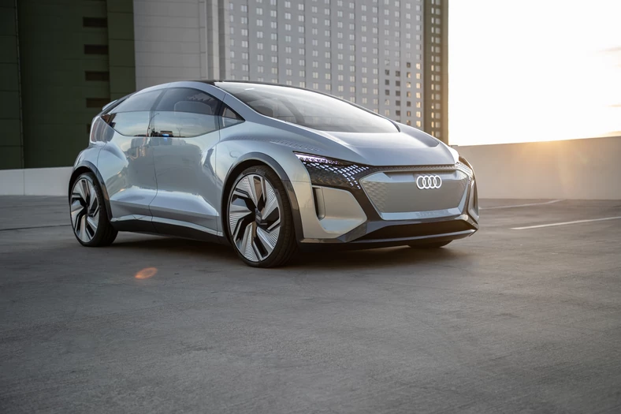
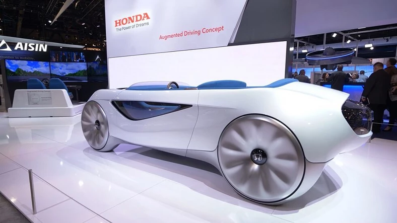
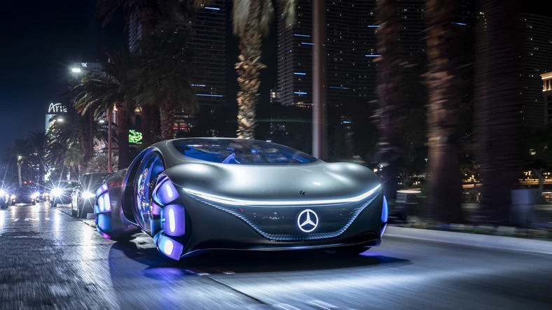
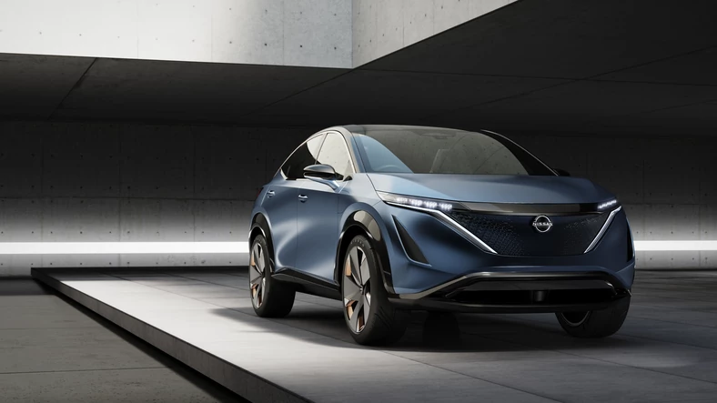
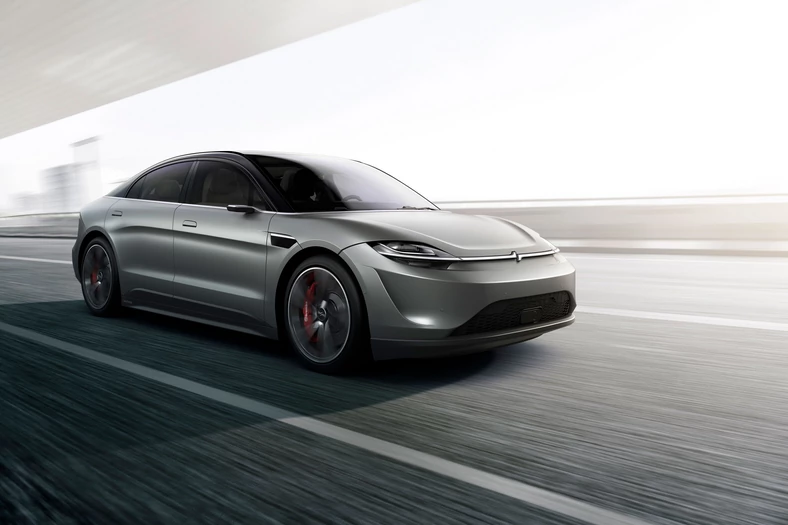
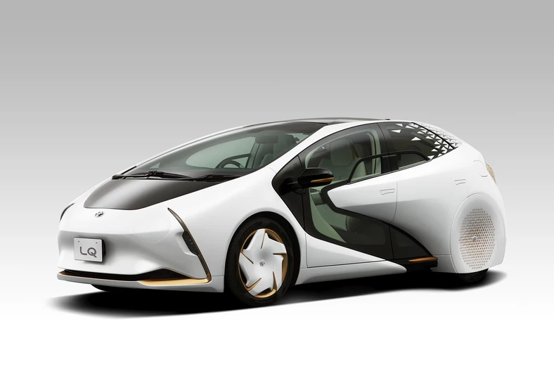
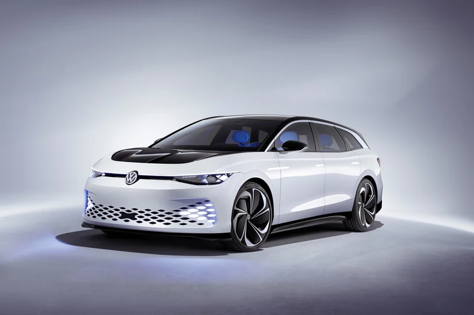
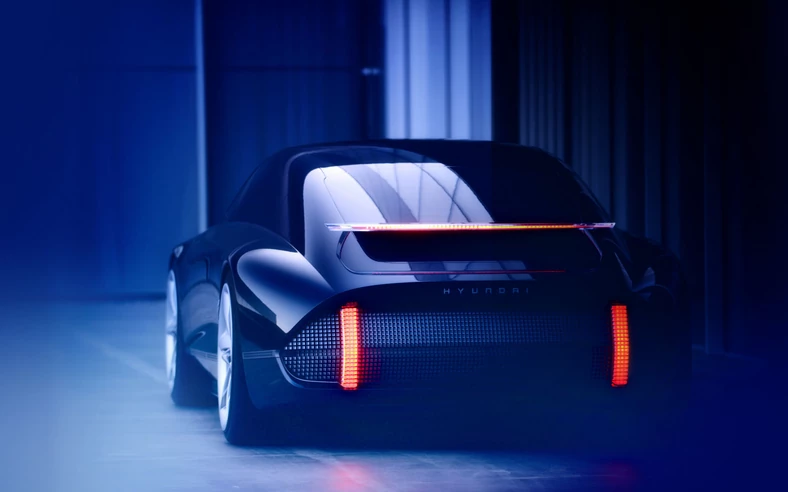
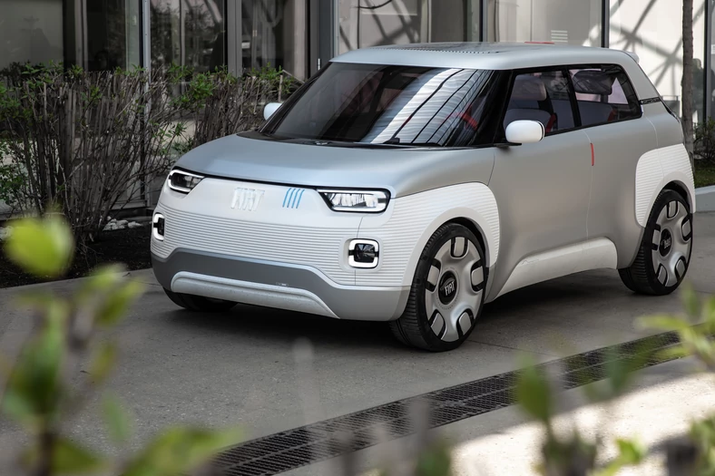

Podzielcie się w komentarzu 😉.
Galeria

Audi AI:ME

Honda Augmented Driving Concept

Mercedes-Benz VISION AVTR

Nissan ARIYA Concept

Sony Vision-S

Toyota LQ

Volkswagen ID. SPACE VIZZION

Hyundai Prophecy

Fiat Centoventi
Źródło zdjęć: komputer-świat